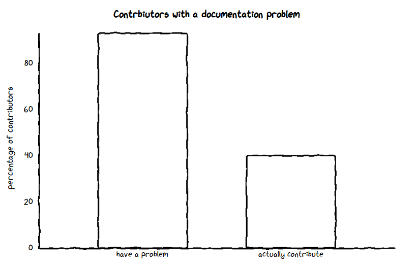
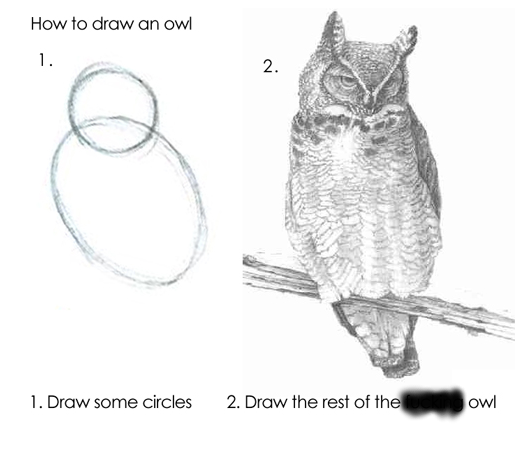

My code is open source on GitHub, but I don't spend any effort making it easy for others to use it. If you want to figure it out yourself, have fun!
Bradley Howington, Pexels
Yet getting help is tricky:

Incomplete or outdated documentation is a pervasive problem, observed by 93% of respondents, yet 60% of contributors say they rarely or never contribute to documentation
Step Two: Restate the problem
Open source projects are under-resourced, not well-documented, and don't attract diverse contributions
Step Three: Consider possible solutions
Find more resources
Long-term support is more about creating time than it is about money
Particularly for documentation
Documentation is highly valued, frequently overlooked, and a means for establishing inclusive and accessible communities.
=> Encouraging user contributions is really important
and here are some more reasons why...
Developers might miss out steps

Step 2: Draw the rest of the *** owl
Developers are familiar with more technical terminologies
Just clone the dev branch, add the grunt tasks and recompile...
Pigsels, CC-0
Users know what users expectations and needs are
How are people actually using your project? Is it the way you expected them to?
Users will actually want to use your documentation
The current state of ***'s software is the worst I've ever seen for any framework anywhere...I've repeatedly been reduced to searching through WWDC video transcripts to figure out where someone says something relevant to whatever I'm working on
Step Four: Figure out what puts people off
High barriers to entry
Winsker, Pixabay
A standard docs toolchain:
Install the correct versions of java, python, maven, sphinx, sphinx-bootstrap-theme
Become a ReStructured Text ninja
Understand about GitHub Forks, Pull Requests, Reviews, and Commits
Then you can submit your first documentation change!
This applies to software in general these days
if you want to start building a full-stack web application in 2018, you may need to first install Node.js and the npm package manager, run a slew of npm commands to configure a custom toolchain with a CSS preprocessor and a JavaScript code bundler, adjust OS environment variables to detect all required library dependencies...
New contributors feel unwelcome
Negative experiences have real consequences for project health. 21% of people who experienced or witnessed a negative behavior said they stopped contributing to a project because of it
Tom Hilton, Flickr, CC-By-2.0
Step Five: Figure out a better solution
Reduce barriers to entry
Allow easy ways for users to contribute
(Preferrably so they don't need to install additinal software)
Get their contributions live as quickly as possible
Acknowledge and encourage contributions, no matter how small
hansbenn, pixabay.com
Attract and nurture existing technical writers
It is no trivial task to make complex information in the technical domain simple for users to understand and follow
Pintrest, yuck
Provide workflows that make it easier to write good documentation
Follow, learn from, and contribute to existing good practices
So, to summarise, this is important because...
Encouraging help with documentation for your project encourages empathy, and improves diversity
But I don't have time!!!1!11!
Michael Jastremski, openphoto.net
Enter Google Season of Docs
Matching technical writers with open source projects
For 3 or 6 months
So we thought...why not abstract that expertise and work to make something more generic?
Skeptical Cat, Flickr, CC-By-2.0
Step Six: Building an actual solution
The Good Docs Project
Aim #1: Identify all the elements of good documentation that a project needs
and provide best-practice resources and templates for each of them
Aim #2: An Open Source Minimal Viable Docset
Helping you to create a baseline set of docs for all stages of a project from initiation through to maturity
Aim #3: A community of writers, users and techies
Practical tips, advice, help for all parts of the process
Increasing quality and consistency, saving time for developers, democratising knowledge, and generallymaking the world a better place
Join us at thegooddocsproject.dev | @thegooddocs | thegooddocs.slack.com | thegooddocsproject.groups.io